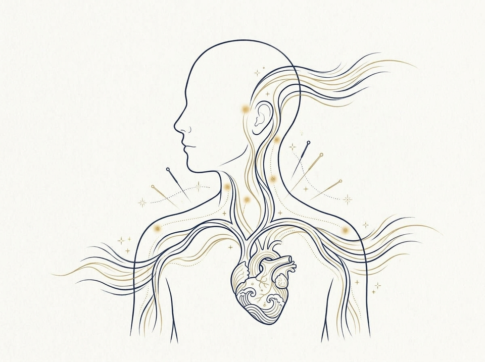

臍ヘルニアの鍼灸
おへそが飛び出し腸管などが脱出する状態です。激しい痛みや戻らない膨らみは緊急受診が必須、安定期の腹圧対策等を補完支援します。

このようなお悩みはありませんか？
- ✓おへそ周辺に柔らかい膨らみがあり徐々に大きくなった
- ✓腹部に力を入れると膨らみが出やすく不快感がある
- ✓吐き気や嘔吐、便秘、お腹の張りを感じることがある
- ✓膨らみが硬く戻らず激しい痛みや赤みがある（緊急受診）
原因・メカニズム
おへそは臍の緒が閉じた跡であり腹壁の中でも構造的に弱い部位です。乳児期は自然に閉じることも多いですが、成人では肥満、妊娠、腹水、慢性的な咳や便秘、重い物の持ち上げなどにより腹圧が持続的に高まることで、腹壁の隙間から腸管などが飛び出して発症します。飛び出した組織が締め付けられて戻らなくなる「嵌頓（閉塞・捻転）」を起こすと壊死の危険があり緊急手術が必要です。
当院の施術アプローチ
1. 膨らみが戻らない・硬い・激しい痛み・皮膚の赤み・嘔吐・発熱がある場合は嵌頓の危険があるため鍼灸絶対禁忌とし、直ちに外科・救急受診を最優先とします
2. 外科医による経過観察または修復手術（開腹・腹腔鏡）を前提とし、おへそやヘルニア膨隆部への直接の鍼灸・強い圧迫は一切行いません
3. 主治医の許可がある安定期や術後回復期に、腹圧上昇の要因となる便秘や慢性的な咳・腰背部のこわばりを穏やかな遠位施術で整え、再発予防の生活管理を支援します
よくある質問（FAQ）
Q. 成人の臍ヘルニアは鍼灸で引っ込めることができますか？
いいえ、腹壁の穴から臓器が飛び出す構造的な問題であり、成人の臍ヘルニアは自然治癒しないため外科での経過観察や修復手術が基本です。患部への強い刺激も危険なため行いません。
Q. ヘルニアが悪化しないよう日常で気をつけることはありますか？
重い荷物の持ち上げなど過度な腹圧を避け、適切な体重管理や便秘・慢性的な咳の対策を行うことが大切です。膨らみに痛みや変色が出たらすぐ受診してください。
#臍ヘルニア#でべそ#へその膨らみ#腹圧#嵌頓#手術